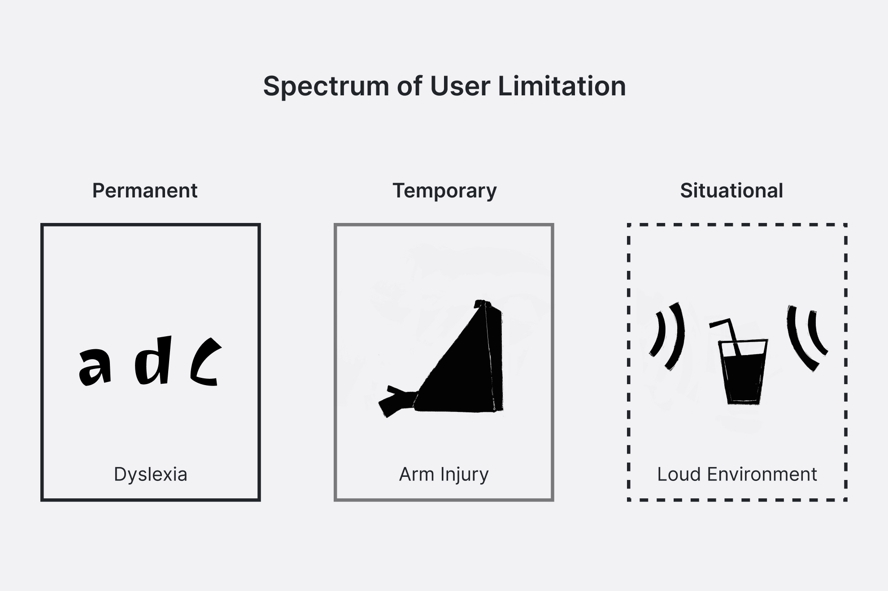

BCLC Design Accessibility Figma Checklist
Internal Tool
69% of people with disabilities reported leaving websites they found difficult to use.
(2019 Report from Click-Away Pound)
As designers, we hold the power to make our products more inclusive from the start by considering the full diversity of human experiences, pushing for accessibility earlier in projects, including accessibility best practices in our designs, and advocating for accessibility features.
TL;DR
An internal Figma component that helps designers integrate accessibility throughout the design process by providing a standardized set of principles to conform to Web Content Accessibility Guidelines (WCAG) 2.0 and 2.1 level AA, and aid advocating for player needs when collaborating with stakeholders and developers, to deliver more inclusive, accessible digital products.
-
Contributions
User Experience, Research, Accessibility, Prototyping, Component Design
-
Tools
Figma, Excel, Confluence, JIRA
-
Team
Kathy Datsky, UX Manager
The Catalyst: Identifying the Need for Accessible Design
For the User:
It is part of the human experience.
Everyone will be impacted by disability and or inaccessibility at some point in their life, whether it’s permanent, temporary, or situational. The population of those with a disability is growing, as reflected in Statistics Canada’s 2022 report, which reveals that 27% of Canadians aged 15 and older live with at least one disability, a 4.7% increase from 2017.
When digital products aren’t designed with accessibility in mind, they can become barriers rather than tools. By considering the full diversity of human experiences and building websites to accommodate assistive tools for people with visual, physical, hearing, cognitive or learning impairments, we help create equitable, meaningful experiences for everyone. Good accessibility benefits all people, not just those with disabilities.
For the Business:
Legislation, Time, and Resources.
In part with the legislative requirement, The Accessible BC Act, BCLC set off on a 5-year accessibility transformation, in which one of the five priority target areas identified to have an impact being ‘Communications and Technology’, striving to conform to WCAG 2.0 level AA.
Through an audit of over 120 key pages across 5 BCLC’s websites and 1 mobile app, it was identified that there were significant accessibility issues. This wasn’t a surprise for the organization as the products weren’t designed with accessibility as a priority. If issues were caught earlier on, before going live, the organization could’ve saved on time, money, and resources to fix the inaccessibility problems.
For the Designer:
Defining a language for advocating
UX Designers strive to champion the users needs within the project scope, but it can be difficult within cross-functional teams as there can be different priorities and languages being used. Being able to define a set of standards as a team they would be delivering across the organization, and having a tool to aid designers in advocating within cross-functional team was important for the UX manager and the rest of the UX team to be able to support the organizations accessibility multi-year plan.
The Scope: Defining the Needs
How might we...
help designers easily discover and integrate standardized accessibility requirements into their process, and enable effective communication within cross-functional teams across projects to deliver equitable, meaningful experience for all players?
How do you embed accessibility into your technical work when you don’t have the lived experience? For BCLC’s UX Team, this meant re-looking at their design process. As the lead designer, I defined a standardized set of accessibility principles for the team to ensure are implemented during their design process that accommodates their players, including those facing situational challenges, as well as visual, physical, hearing, cognitive or learning impairments. The following is one facet the UX team implemented to produce accessible experiences.
The Solution: Making Accessibility Seamless for Every Project
The goal is to provide designers a tool to improve the experience for all their players by addressing key accessibility issues. It’s faster and more cost-effective to resolve accessibility issues in the beginning during the design phase of a product or feature. Defining a standardized set of principles the UX team can implement into their design process provides transparency and accountability to each other, across different product teams, as well as saves time, energy, and money by having products designed with accessibility in mind the first time.
-
Embedded in the designs
As a figma component, designers are able to integrate the checklist into their final design file for handoff.
-
Tailored to each project
Using booleans, designers can show parts of the checklist that applicable to their designs.
-
Common Language
Guidelines provide a common understanding and language for the accessibility work and requirements between the UX team, stakeholders and product teams.
-
Transparent communication
If developers need to assume, it might effect the experience for designers. Designers should own designing the whole experience of users, not just the visuals. This includes audible and keyboard.
-
Educational
Provides resources to share with stakeholders and product teams, or give designers a refresher on the standard.
-
Ability to adapt and grow
As the team uses the component, learn from their players, and accessibility standards change, the component is able to change and grow.